EcoLact / Arquitectura de software
Arquitectura móvil: KMP y MVVM
Interfaz reactiva y lógica compartida
El módulo shared reúne la lógica común de la app: pantallas Compose, estado, repositorios, transporte y persistencia. Las piezas que necesitan funciones del sistema operativo se implementan en source sets específicos.
MVVM aplicado al registro de una entrega
El diagrama separa presentación y acceso a datos. El repositorio coordina la copia local y la API; no debe interpretarse como que toda escritura se guarda localmente antes de intentar la red.


Consultar la fuente editable
flowchart TB
V[Vista Compose: RegistrarScreen] -->|eventos de usuario| VM[RegistrarViewModel: estado y eventos]
VM -->|onGuardar| R[AcopiadorRepository]
VM -. StateFlow y collectAsState .-> V
R --> L[CacheRepository y SyncQueueRepository]
L --> DB[(SQLite mediante SQLDelight)]
R --> API[AcopiadorApi]
API --> K[Ktor Client]
K --> B[API REST Laravel]
DB -. cambios observables .-> R
classDef default fill:#eaf3ff,stroke:#79a4df,color:#103b86,rx:7,ry:7;
Vista
AcopiadorRegistrarScreen observa state con collectAsState() y muestra ESCANEAR, FORMULARIO o RESULTADO.
ViewModel
RegistrarViewModel recibe eventos, valida los litros, captura una sola vez la hora del acopio y publica el resultado.
Repository
AcopiadorRepository identifica proveedores, combina consultas locales con pendientes y decide enviar o encolar.
Fuentes de datos
SQLDelight conserva caché y cola; Ktor envía solicitudes y traduce respuestas del backend.
Qué ocurre al pulsar Guardar
La vista delega en onGuardar(). El ViewModel valida que los litros sean positivos y evita otro envío mientras está guardando. Captura la hora real y llama al repositorio. Una entrega confirmada permite actualizar consultas; una guardada sin red se muestra como pendiente; un rechazo informa el motivo sin presentarlo como éxito.
Este recorrido constituye una implementación MVVM por responsabilidades. El ejemplo hereda de ScreenModel, no de androidx.lifecycle.ViewModel. La clase propia crea un scope y lo cancela en onDispose; rememberScreenModel vincula su vida a la composición. No se atribuyen aquí viewModelScope, Hilt o Koin: AppContainer realiza la composición manual de dependencias.
Código común y código específico
| Ubicación | Responsabilidad comprobada |
|---|---|
shared/src/commonMain |
Compose, ViewModel/ScreenModel, repositorios, modelos, Ktor y contratos de plataforma |
shared/src/androidMain |
Motor OkHttp, AndroidSqliteDriver y observación de redes Android |
shared/src/iosMain |
Motor Darwin, NativeSqliteDriver y adaptaciones iOS |
shared/build.gradle.kts |
Destinos Android, iosArm64 e iosSimulatorArm64; dependencias y base EcoLactDatabase |
Portabilidad configurada no equivale a validación en iOS. ConnectivityObserver.ios.kt está marcado como pendiente y devuelve siempre true. No ofrece todavía detección real de señal. Esta documentación no afirma que las funciones hayan sido compiladas ni probadas en iOS.
Justificación técnica
KMP reduce la duplicación de estado, reglas de presentación y acceso a datos entre plataformas. Compose separa la descripción de pantalla de sus eventos. El intercambio por StateFlow permite actualizar la interfaz después de sincronizar sin reconstruir manualmente toda la navegación. Las adaptaciones por plataforma permiten usar motores HTTP y SQLite adecuados a cada sistema.
Evidencias de implementación
Las referencias identifican código revisado. El área de imagen está preparada para la captura manual del archivo indicado; el marcador visual no constituye una captura de la implementación.
Estado y eventos del registro
El ViewModel valida los litros, evita un doble guardado y captura la hora del evento antes de delegar.

Qué demuestra. onGuardar coordina el evento de la interfaz y publica su resultado mediante StateFlow.
Archivo de imagen: mvvm-viewmodel.png · Abrir imagen
Ubicación en GitHub: EcoLactMobile/shared/src/commonMain/kotlin/pe/edu/upeu/ecolactmobile/feature/acopiador/screens/RegistrarViewModel.kt
Fragmento sugerido para la captura: líneas 133–156 de la revisión documentada.
Compose observa el estado
La vista decide qué etapa mostrar a partir del estado emitido por el ViewModel.

Qué demuestra. collectAsState conecta el estado observable con la pantalla de escaneo, formulario y resultado.
Archivo de imagen: mvvm-vista.png · Abrir imagen
Ubicación en GitHub: EcoLactMobile/shared/src/commonMain/kotlin/pe/edu/upeu/ecolactmobile/feature/acopiador/screens/RegistrarScreen.kt
Fragmento sugerido para la captura: líneas 70–87 de la revisión documentada.
Fuentes adicionales y alcance de la revisión
Revisión estática del repositorio local: 28 de octubre de 2026. Enlaces a la revisión 75901337489d; la existencia de cada archivo y los fragmentos sugeridos se comprobaron localmente. No se ejecutaron servicios de negocio ni se verificó un despliegue.
- EcoLactMobile/shared/build.gradle.kts
- EcoLactMobile/shared/src/commonMain/kotlin/pe/edu/upeu/ecolactmobile/core/ui/state/ScreenModel.kt
- EcoLactMobile/shared/src/commonMain/kotlin/pe/edu/upeu/ecolactmobile/di/AppContainer.kt
- EcoLactMobile/shared/src/commonMain/kotlin/pe/edu/upeu/ecolactmobile/feature/acopiador/AcopiadorRepository.kt
- EcoLactMobile/shared/src/iosMain/kotlin/pe/edu/upeu/ecolactmobile/core/sync/ConnectivityObserver.ios.kt